如何打开
点击如图所示的按钮或使用组合键
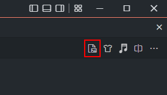
使用
点击图标即可复制图标名直接复制到kv中即可使用，右键点击图标可浏览图标原文件，但是注意不要修改该文件夹中的文件，会影响插件功能。搜索功能支持空格分割和正则，搜索框左侧可以选择英雄头像辅助搜索。
注意事项
如果插件正确获取到game目录与content目录，则项目中的自定义图标会显示在官方图标之后，关于目录获取请参考项目配置。
如何打开
点击如图所示的按钮或使用组合键
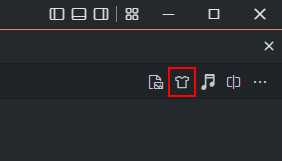
使用
当你为一个单位配置饰品时通常需要解包dota2的items_game.txt文件去搜寻该模型的饰品id，或者你使用官方的UI标签DOTAUIEconSetPreview时需要用到信使的饰品id用来展示3D信使模型。将模型路径粘贴至搜索框即可获得相关信息。
1.复制饰品模型路径
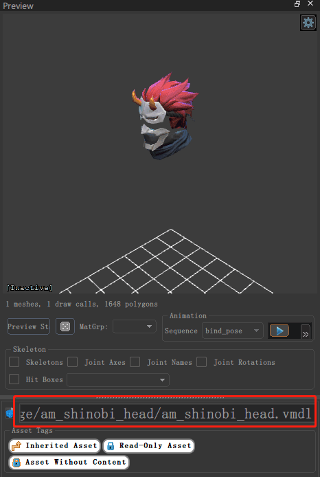
2.粘贴至搜索框
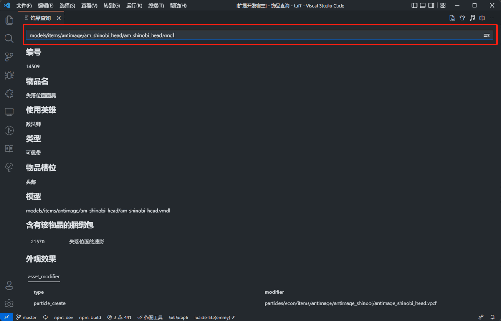
搜索套装的技巧，先搜索单个饰品，然后复制套装id进行搜索。

直接搜索英雄名字会展示该英雄的所有饰品（暂时只支持英雄内部名称）
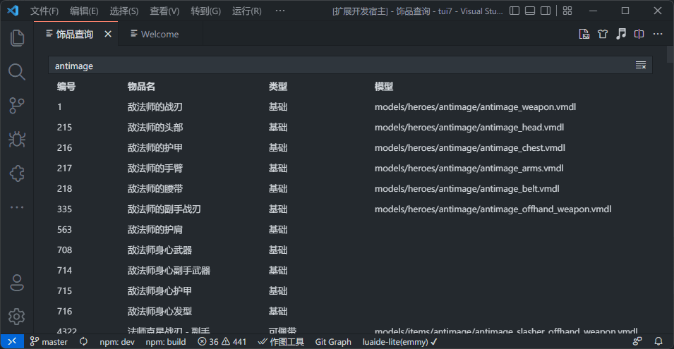
如何打开
点击如图所示的按钮或使用组合键
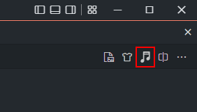
使用
在dota2的资源管理器中找到心仪的音效文件，复制其路径粘贴至搜索框中。选择后会自动写入当前文本编辑器的光标位置。
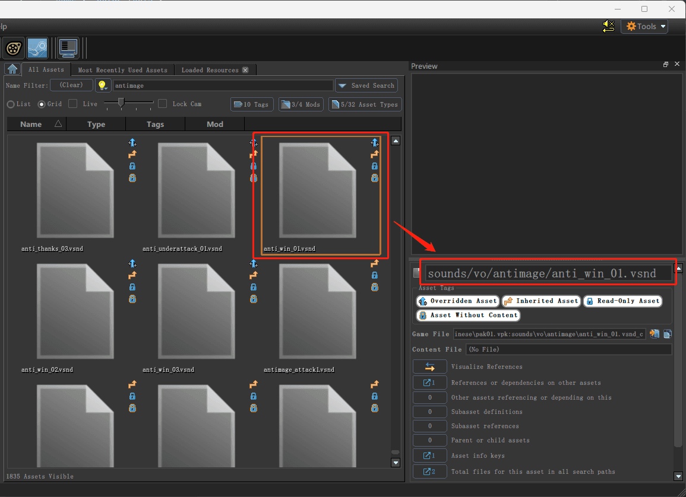

如何打开
找到左侧书一样的按钮
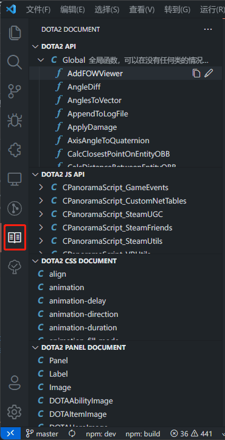
如何使用
点击树状图中的函数可查看详细信息。
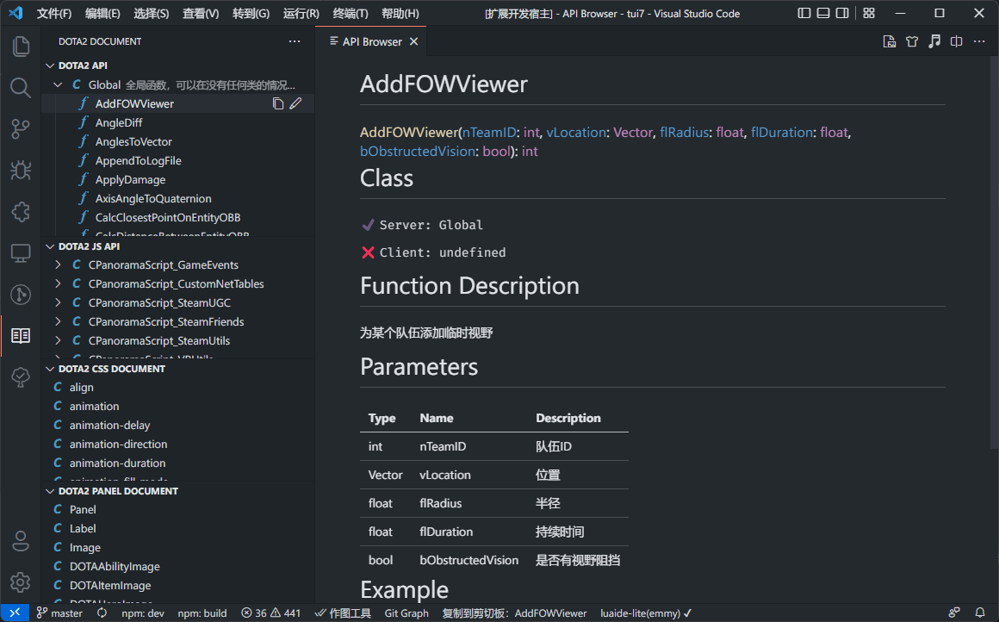
可以点击列表查看该类下的所有函数
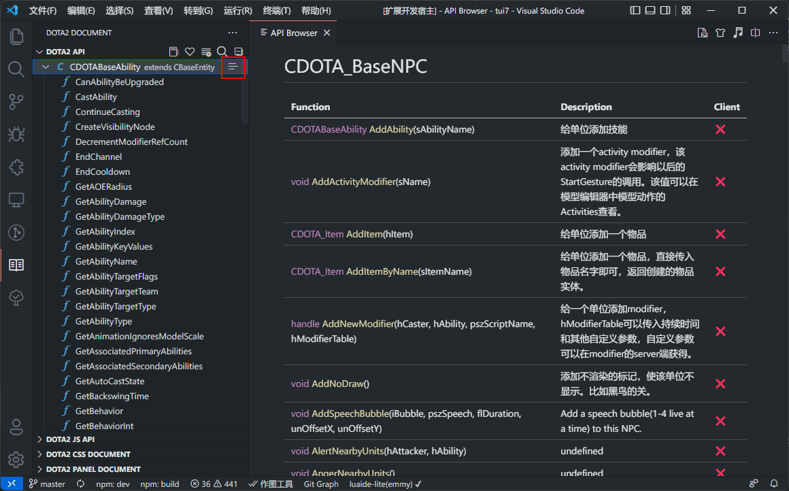
点击编辑可以修改其信息，包括描述，参数的类型名字描述，返回值，范例等。
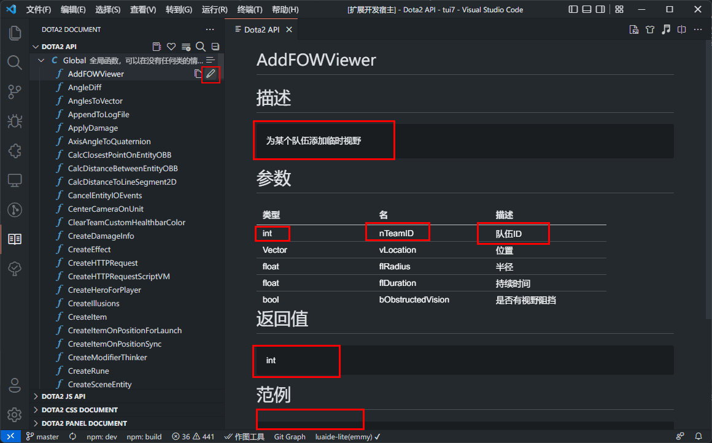
lua api的更新日志，可以查看不同时期api的变化。
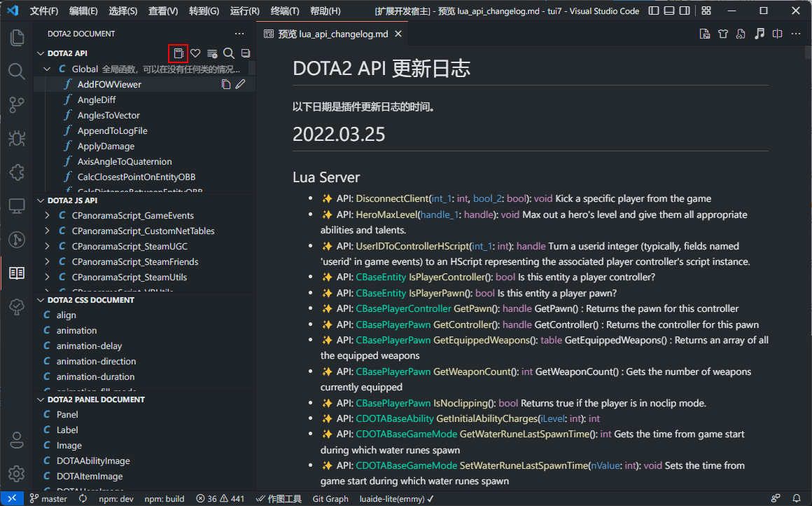
其余功能如
注意事项
- 目前编辑笔记功能只支持lua和css，此处修改的内容存在数据库中，请慎重修改别人的成果。当然对于错误的部分可以进行修正。
- 编辑笔记功能的描述部分请不要使用换行，会跟其他内容产生冲突，所以换行符会自动清除无法上传。
- 如果使用插件的lua代码补全功能，笔记也会更新到补全代码的提示中。
- 如果使用了lua解析插件，比如emmylua，可以使用指令
生成Emmylua插件用lua api文档 生成一份定义文档到项目中，每次生成都会根据当前最新的笔记生成。 - 对于不想看到的文档可以在设置中关闭
为什么要进行项目配置
众所周知，dota2的项目路径分为game和content目录。而这两个目录分别处于不同的文件夹下。为了更好的进行项目管理，比如使用git进行版本管理，就需要使两个文件夹处于一个目录下会比较方便。同时本插件对于一个正确配置的项目有更好的支持。
如何进行项目配置
方法一
使用符号链接(symlinks)
方法二
使用软件
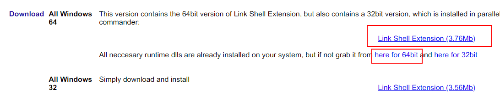
首先在你满意的位置创建一个文件夹用于放置项目
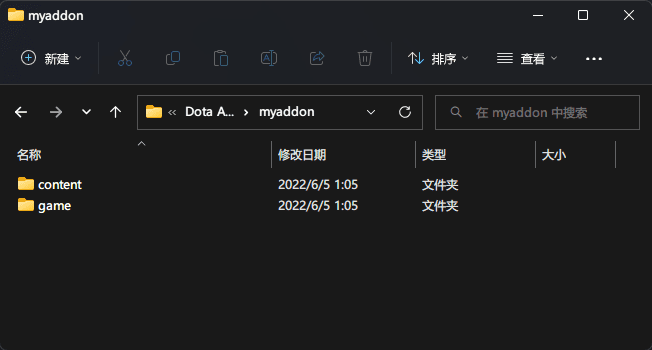
然后去dota2的game目录下右键项目目录选择【选择源链接点】
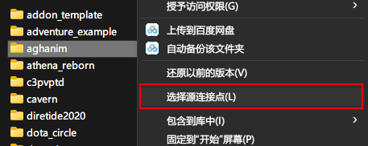
回到刚刚创建的game目录下右键选择创建为目录连接点
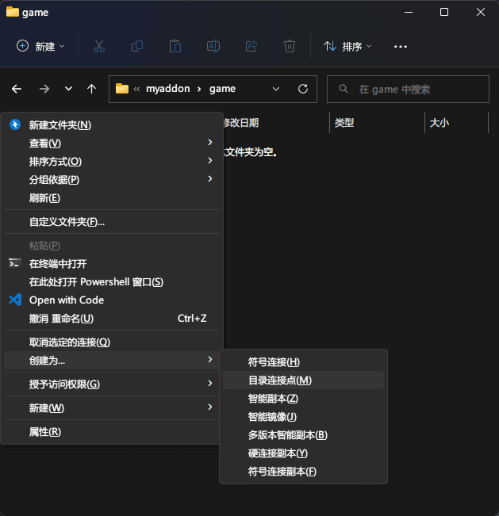
对content进行同样操作后就能得到一个game与content共存的文件夹
注意事项
如果不想进行项目配置，比如你没有版本管理，只是单纯使用例如vscode工作区将两个文件夹拉进来。那么也可以在设置找到Addon_path，手动配置项目的game和content路径。该设置最好设置在工作区设置中。